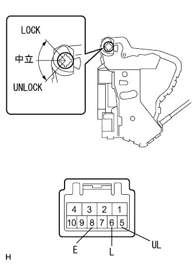
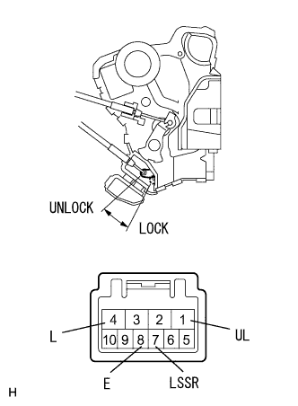

Front Door Lock Assembly RH Inspection |
| 1. Front Door Lock Assembly RH Inspection |
 |
Key-linked Switch Inspection
Using SST (Toyota electrical tester), measure the resistance between each terminal at each switch lever position.
| Tester Connection | Condition | Standard |
|---|---|---|
| 6(L) - 8(E) | Key-linked switch LOCK | Below 1 Ω |
| 6(L) - 8(E) 5(UL) - 8(E) | Key-linked switch neutral | 10K Ω or higher |
| 5(UL) - 8(E) | Key-linked switch UNLOCK | Below 1 Ω |
 |
Door Lock Operation Inspection
Inspect the door lock operation when battery voltage is applied to each terminal of the connector.
| Battery connection | Door Lock Operation |
|---|---|
| Battery positive → 4 (L) Battery negative → 1 (UL) | LOCK |
| Battery positive → 1 (UL) Battery negative → 4 (L) | UNLOCK |
Position Switch Inspection
Using SST (Toyota electrical tester), measure the resistance of the position switch.
| Tester Connection | Condition | Standard |
|---|---|---|
| 7(LSSR) - 8(E) | Door lock operation LOCK | 10K Ω or higher |
| 7(LSSR) - 8(E) | Door lock operation UNLOCK | Below 1 Ω |